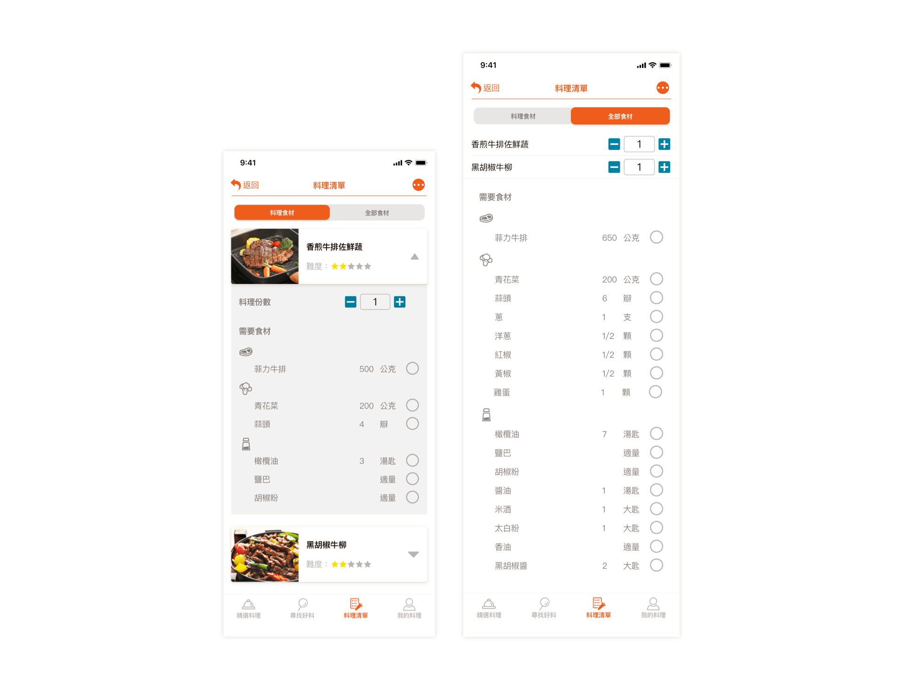

{kind=link}
{kind=link}
流程圖-Flow Chart
點擊圖片即可放大
食譜教學應用程式
關於作品
以自身下廚經驗，在學習料理時所遭遇的問題為發想的練習作品。
執行時間:
1 month
扮演角色:
UX: 問題定義、訂定功能、功能流程
UI: Wireframe、精稿、Prototype
發想此作品的動機是，曾在上日文課時，同學們常會有突發狀況(當天生病、下班塞車、加班)導致無法上課或是遲到，進度總是落後其他同學。假日複習遇到問題卻上網尋求卻有多種解答，常常感到困擾！
題目解析
因生活型態的改變，外食族人口比例一直維持多數；但是近年來，人民健康意識興起，生活消費提升，因為各種問題而使外食族有了想自己煮飯的想法。 本專案旨在希望幫助想學習料理的使用者簡化料理流程、方便學習做菜。
Who
家庭主婦、料理新手、小資族( 共通點: 學會不同新料理、省錢 / 差異點: 能出的預算不同、學習程度不同)
What
學習各種食材料理，跟著步驟製作到完成，僅用簡單器具也能製作料理。
Why
料理新手能學會料理，想省錢的使用者可以用現成食材和器材做出不同變化。 避免食材浪費，完成料理後還能分享給朋友。
When
買菜前、買菜途中、檢查剩下食材時、料理前。
Where
室內(家中、廚房、賣場)
How
確定功能
以使用者角度拆解深入各種功能，思考使用者在使用產品時，還會遭遇什麼難題，加入產品中給予使用者體貼的感受。
作為一個日文學習者
如果我能透過事前測驗，然後就能知道自己程度。
如果我能學習新單字，然後就能認識新的詞彙應用。
如果我能學習新文法，然後就能使用進階句型。
如果我能學到常用會話，然後就能使用使用情境。
如果我有課後練習作業，然後就能強迫自己複習。
如果我能做線上測驗，然後就能評估自己的檢定程度。
如果我能使用線上問答，然後就有專業老師幫我解答。
如果我能使用筆記功能記錄問題，然後就能紀錄重點。
如果我能查看日本資訊，然後就能知道日本最新流行。
如果我能使用字典，然後就能查詢不懂詞彙。
點擊圖片即可放大

5.料理清單
依據使用者的需求，自行選擇不同的模式清單，使用「料理食材清單」，直接看到該料理需要食材，而使用「全部食材」則可以看到全部料理的食材。 準備好食材後即時勾選，讓使用者不會遺漏任何項目。
使用者反饋
分別請會「看影片做菜」與「無料理經驗」的朋友測驗，料理步驟流程對於「無料理經驗」的使用者來，按上下一步不如一頁式滾動來的方便； 但對於有過「邊看影片學做菜」的使用者，指出步驟式教學可以不必慌張地重播影片，降低做菜時的焦慮感，而購物清單可以直接看到所需份量也很方便。 某些按鈕語意不清，造成測試過程中的不確定，找不到正確目標。
心得
急著要提出解決方法，想的流程不夠全面,某些操作方法直覺性不夠,要多考慮到使用者操作的易用性。
例如:
1.料理清單點擊圖片可以直接跳到食譜教學，不用從收藏功能進去
2.依照使用者的使用程度是否考慮把收藏功能直接分出在 tab bar 分類裡
3.按鈕icon或語意的要更明確，讓使用者不須使用太多時間思考是何功能。或是使用 icon + 功能文字讓按鈕直接點出功能作用。

{kind=link}
{kind=link}
{kind=link}
{kind=link}
{kind=link}
{kind=link}
{kind=link}
{kind=link}
{kind=link}
{kind=link}
{kind=link}
{kind=link}
{kind=link}